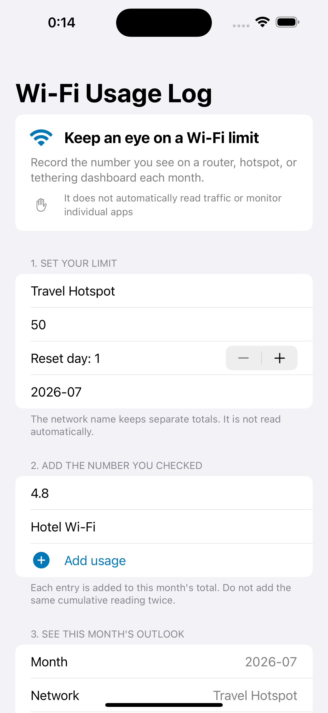

App category
Utilities
Only apps for utilities. Browse the job you need without mixing it with specialist tools from another field.
App category
Only apps for utilities. Browse the job you need without mixing it with specialist tools from another field.



record the number you checked on a router or hotspot dashboard and keep a simple monthly forecast.